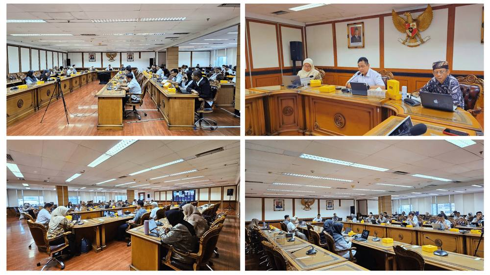

FGD Soroti Potensi Produk Rumput Laut Non-Hidrokolloid untuk Pertumbuhan Ekonomi Indonesia

Jakarta, 23 April 2025 — Kementerian Kelautan dan Perikanan (KKP) melalui Tropical Seaweed Innovation Network (TSIN) di bawah Direktorat Jenderal Penguatan Daya Saing Produk Kelautan dan Perikanan (DJPDS), bekerja sama dengan UNIDO Global Quality and Standards Programme (GQSP) Indonesia, menyelenggarakan Focus Group Discussion (FGD) pertama dalam rangka penyusunan Seaweed Roadmap untuk Rencana Pembangunan Jangka Menengah Nasional (RPJMN) 2025–2029.
Bertempat di Ruang Arwana, Gedung Mina Bahari II, kegiatan ini dihadiri oleh lebih dari 500 peserta dari berbagai sektor, termasuk pemerintah, asosiasi, akademisi, dan pelaku usaha, baik secara luring (45 peserta) maupun daring (485 peserta). Tema FGD kali ini adalah: “Mengungkap Peluang Usaha Produk Rumput Laut Non-Hidrokolloid.”
Topik yang dibahas dalam FGD ini antara lain:
- KONDISI PASAR RUMPUT LAUT oleh Bapak Erwin Dwiyana (Direktur Pemasaran, DJPDS-PKP)
- PELUANG DAN TANTANGAN PENGEMBANGAN PRODUK OLAHAN RUMPUT LAUT NON-HYDROCOLLOIDS oleh Prof. Dr. Ir. Nurjanah dari IPB University,
- KEBIJAKAN PERPUPUKAN DAN PELUANG PUPUK HAYATI DALAM MENDUKUNG PROGRAM NASIONAL SWASEMBADA PANGAN oleh Perwakilan dari Kementerian Pertanian dan
PROSES BISNIS RUMPUT LAUT DARI HULU HINGGA HILIR oleh perwakilan dari Kementerian Perindustrian.

Diskusi berfokus pada lima isu strategis: ketersediaan bahan baku, pengembangan produk, potensi pasar, kesiapan teknologi, dan dukungan kebijakan pemerintah. Terkait bahan baku, Bapak Pontas (ASTRULI) menyoroti belum adanya database nasional yang menjamin kestabilan pasokan dan harga rumput laut. Ia mengusulkan pemetaan lokasi produksi rumput laut sebagai dasar perencanaan, khususnya untuk jenis Spinosum, Gracilaria, Ulva, dan Sargassum. Ibu Lin (UNDANA) turut menegaskan pentingnya pemetaan ini. Dalam hal pengembangan produk, Bapak Boedi S. Julianto (PT. JASUDA) mengusulkan pengembangan produk seperti biostimulan, pakan akuakultur, bioplastik, dan kosmetik. Ibu Lin menyarankan pendekatan bertahap dalam lima tahun ke depan, dimulai dari makanan siap saji, pangan fungsional, pupuk, kosmetik, hingga biofuel. Aspek regulasi, khususnya untuk kosmetik dan suplemen, menjadi perhatian utama.
Potensi pasar juga menjadi sorotan, terutama peluang ekspor Ulva untuk food grade ke Norwegia. Peningkatan kapasitas UMKM dan pemenuhan standar produksi menjadi kunci untuk mendukung rantai pasok ekspor. Dalam hal teknologi, perlunya kolaborasi antara akademisi dan industri disampaikan oleh Bapak Boedi, sementara Bapak Sudari (UNIDO-GQSP) menambahkan pentingnya dukungan investasi asing untuk mempercepat pengembangan teknologi. Dukungan kebijakan dari pemerintah dinilai sangat penting. Usulan mencakup fasilitasi penggunaan biostimulan di tambak udang dan perkebunan, pelatihan intensif bagi UMKM dalam proses sertifikasi, serta revisi regulasi seperti KBLI dan insentif fiskal. Beberapa usulan tambahan juga muncul, antara lain: pembentukan program studi khusus rumput laut (UNDIP), peningkatan produksi lokal nori (PT. Nori Noribet), serta pengembangan mini industri berbasis desa (Koperasi Mina Agar Makmur).
FGD ini menjadi langkah awal penting dalam mendorong diversifikasi industri rumput laut Indonesia ke arah produk non-hidrokolloid yang bernilai tambah, inklusif, dan berkelanjutan sebagai bagian dari perencanaan RPJMN 2025–2029.